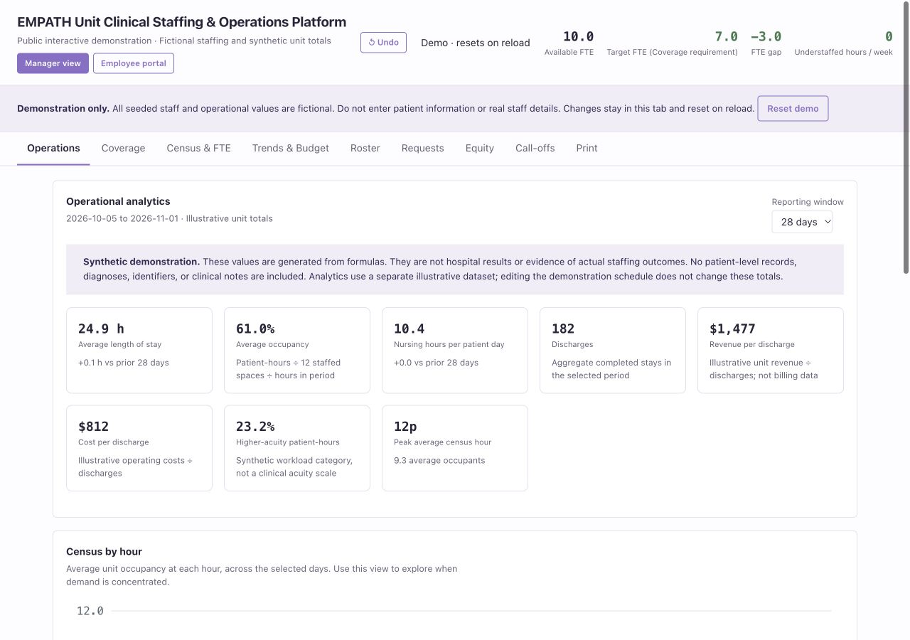

I build software for the problems I see at work.
At Whis, I connect manufacturing data with commercial intelligence. On my psychiatric unit, I built a scheduling tool around the people working the shifts.
I notice problems, work through the details, and build something people can use. I founded Whis LLC and built Omni Prospect to help manufacturers connect their internal data with outside intelligence and identify business opportunities.
Before Whis, I worked in healthcare consulting, analyzing claims and evaluating regulatory requirements for an AI telehealth company entering U.S. markets. I now also work as a psychiatric aide, where I built EMPATH after seeing how staffing and scheduling problems affected the people on my unit.
I'm interested in building healthcare businesses from the ground up: understanding the opportunity, testing the assumptions, and doing the work to turn an idea into a useful product.
The problem. Manufacturers have useful information spread across customer records, orders, quotes, and public announcements. Those sources do not use the same names or identifiers. An opportunity is only useful if it can be connected to the right customer and the right capability.
What I built. Omni Prospect brings internal ERP, CRM, and quoting data together with government contract announcements and industry research. I own product design, architecture, development, and implementation with the client's technical and commercial teams.
The hardest part was the data. I designed a BigQuery gold layer with a consistent naming system for customers, sites, and business units, backed by explicit matching rules. A separate, deterministic scoring process ranks opportunities; LLM-assisted research explains the supporting evidence and leaves uncertain associations for human review.
Delivery. Built with React, TypeScript, FastAPI, PostgreSQL, and Docker, with deployment and data integration in the client's Google Cloud environment. Approved by the client for production use.
The problem was on my own unit. Nurses were working schedules that left little room for a consistent life outside the hospital. Managers spent hours building schedules that still felt unfair, and the new unit needed a better way to show its staffing needs. I did not think that had to be accepted as normal.
So I built a tool. Nurses could submit preferences and see their schedules and equity scores. The scheduler considered unit coverage, call-offs, picked-up shifts, and past scheduling compromises. When someone received a less-than-ideal shift, that history informed the next schedule.
Making the case for staffing. A manager dashboard tracked census, length of stay, patient-level financial metrics, and nursing hours per patient. The data was incomplete, but the trends helped nurse management advocate for two additional nursing positions.

Working in healthcare compliance, I spent a disproportionate amount of time just staying current: scanning OIG enforcement actions, Federal Register notices, new CMS rules, FDA actions, and congressional activity across a dozen sources, for a dozen clients. The manual overhead was real. I'd spend hours each week sorting through noise to find the two or three things that actually mattered to a specific client in a specific regulatory context.
So I built infrastructure to do that automatically. A pipeline pulls from 30+ government APIs and industry feeds every Monday, uses a language model to classify urgency and synthesize the implications for two distinct audiences (compliance and strategy professionals, and policy readers) and publishes a structured briefing as a static site. Zero manual effort after setup. The dashboard I wished had existed when I needed it most.
A personal project I took on out of curiosity. The 2025 reconciliation law reshaped how Medicaid gets financed by phasing down the provider-tax ceiling, adding work requirements, and squeezing optional benefits. I wanted to understand which states were most exposed and by how much, so I set out to answer that question the way a research associate on a state-Medicaid policy team would: with the public federal datasets, not punditry.
The mechanical part of that work is the same grind every time, so I built an analyst workbench to automate it: fetch, clean, compute, chart, and draft. It ingests CMS-64, managed-care, Census coverage, and KFF policy data into one analysis-ready panel and runs four financing analyses: provider-tax cap exposure, an HCBS vulnerability index, work-requirements coverage loss, and dual-eligible spending concentration. A language model drafts each finding in a tell / show / so-what structure, and every draft ships with a claims-to-verify checklist, because the tool runs the arithmetic but the analyst owns every published conclusion.
Founded Whis LLC and built Omni Prospect, a commercial intelligence platform approved by the client for production use. Own product design, application architecture, development, and coordination with technical and commercial leadership.
Provide direct patient care in acute inpatient psychiatry, with firsthand exposure to staffing constraints, prior authorization, and medication access. Built EMPATH to automate equitable nurse scheduling and track unit operations; its data helped nurse management advocate for two additional nursing positions.
Source 1 is a Pittsburgh-based compliance and revenue integrity consulting firm serving healthcare providers ranging from small physician practices to large health systems. As Consultant and Client Lead, I served as the primary regulatory subject matter expert across a portfolio of 10+ clients, managing engagements end-to-end and presenting findings directly to C-suite and board-level leadership.
Relevant coursework: Neuroscience, Organizational Psychology, Healthcare Strategic Management and Policy, Cognitive Psychology
Applying quantitative methods (SQL, Python, and public datasets) to messy regulatory and claims data to surface patterns that hold up to scrutiny. The subject is healthcare; the analytical approach travels to any data-heavy, regulated field.
I'm interested in healthcare technology, company building, and problems that need both analytical work and hands-on execution. If that sounds like your team, I'd like to hear from you.